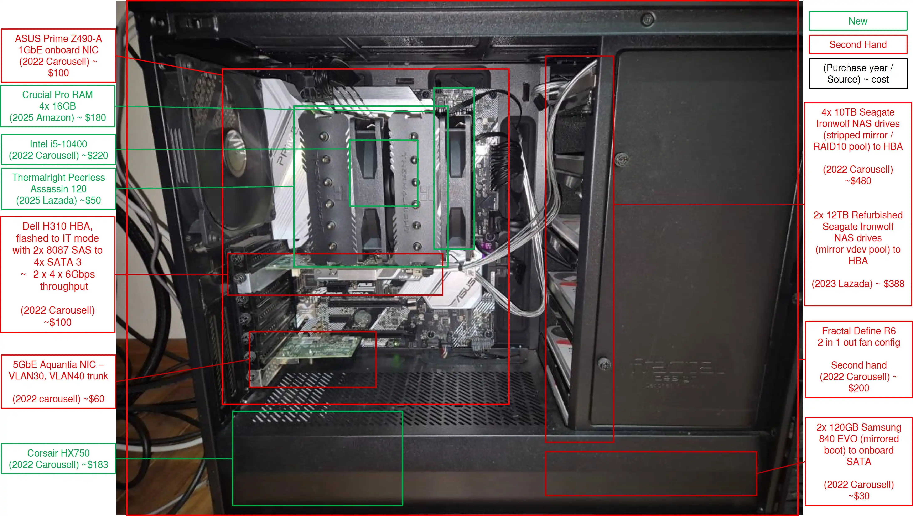

TrueNAS Server
Main NAS system for storage, media serving, and data redundancy.
Mirrored boot drives, pools configured as striped mirrors. From past experience of a single drive failing from pool 1, the rebuilding took slightly less than a day when I added a new drive to replace the dead one. NAS was still operational with one drive down, although I reduced my write and retrieval activities until the replacement drive arrived.
Access through VLAN 30 (dedicated NAS subnet for future storage expansion) and VLAN 40 (for network management)

Hardware
- CPU: Intel Core i5-10400
- RAM: 64 GB DDR4
- NICs: 1GbE onboard + 5Gbps Aquantia PCIe
- Storage Pools:
- Boot: 2x256GB (mirrored)
- Pool1 (Peky-1): 4×10TB (striped mirror)
- Pool2 (Peky-2): 2×12TB (striped mirror)
- Estimated cost under $2000, my lovely monster stitched together with many second hand parts
Services
- TrueNAS Core (ZFS)
- NFS exports to Debian Server & Proxmox via 5GbE NIC for homelab network
- SMB exports via onboard 1GbE NIC for family network to provide family with Windows NTFS Network Drive
- Snapshot-based backup and scrub scheduling
- Proxmox VM NFS storage